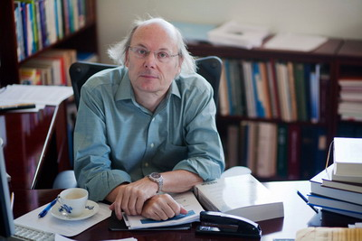

A Danish Ph.D. student at Cambridge University, Bjarne Stroustrup, was heavily influenced by SIMULA. In 1980, working as a researcher at AT&T Bell Labs, he began adding object-oriented features to C. This first version of what would later become C++, was named C with Classes.

Unlike idealistic languages that enforce "one true path" to programming Utopia, C++ is pragmatic. C++ is designed as a multi-paradigm language.
In C++ the object-oriented and the procedural programming styles are complementary, since you may find a use each approach. So, consider each paradigm or style a tool that you can pull out of your toolbox when needed, to apply the conceptual model that is most appropriate for the task at hand.